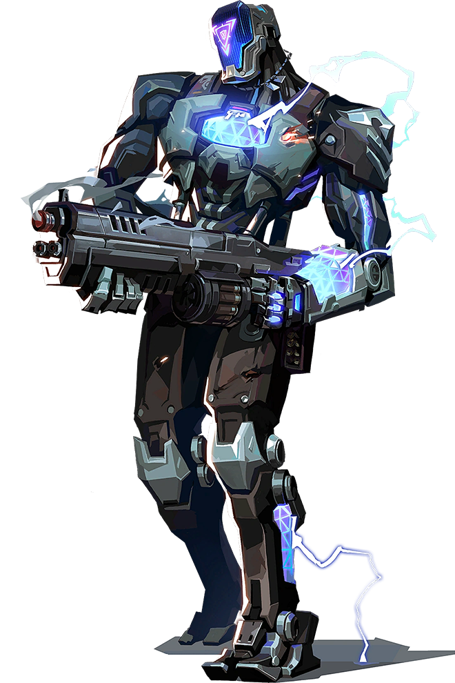
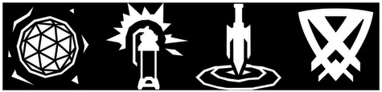
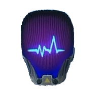
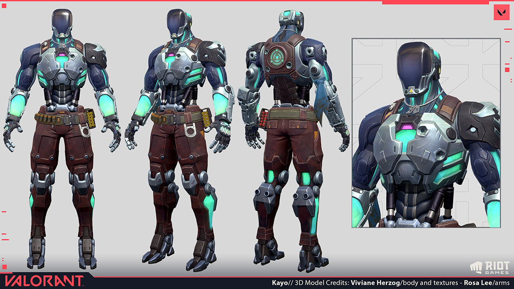

KAY/O is the 16th agent added to the first person shooter 'VALORANT'
He's a robot built to kill superhumans known as 'radiants,' who time travelled from a distant future after fighting in a war against radiants in order to hopefully stop the war from happening entirely. He was discovered on the map 'Breeze' located in the carribian after using a teleporter there to travel back across centuries and sending out a distress signal. He was soon picked up by the VALORANT protocol who recruited him as their 17th agent.
His kit is comprised of a knife called 'ZERO/point' which can be thrown to suppress enemy abilities within its 15 meter radius and tells you who it scans, a grenade called 'FRAG/ment' which pulses 4 times and damages enemies in a 5 meter radius for every pulse, and flashbang called 'FLASH/drive' which blinds enemies within line of sight for a maximum of 2.25 seconds. He also has his ultimate ability 'NULL/cmd' which will suppress enemies within a 42.5 meter radius around KAY/O for its 15 second duration. During his ultimate KAY/O will send out 5 pulses, suppressing enemies within his radius, gain a 10% buff to his fire rate, reload speed, and equip speed, and if he runs out of health instead of dying he will be downed for 15 seconds, where his teammates can then revive him.

Despite being a robot KAY/O is not devoid of human emotions, often doing things like cracking jokes during matches or getting heated. My personal favourite line of his is when he kills another KAY/O he says "Toaster." He was close friends with the Brimstone in his old timeline before he died in combat in KAY/O's arms and so he feels a deep sense of responsability and guilt towards protecting Brimstone.
Within the protocol KAY/O is seen as a strong and reliable teammate and is pretty close with Phoenix, Breach, Sage, Brimstone, and Sova. The 'Warm-up' cinematic on the VALORANT YouTube channel serves as a very good showcase of his personality, showing his friendship with Phoenix and the others, as well as his combat prowess.
My personal favourite quotes of KAY/O's mostly come from before a match starts, aside from my #1 favourite quote of his. My top 10, from best to not as best are:

I enjoy playing KAY/O for three main reasons
KAY/O's ZERO/point is a GREAT piece of utility working as both a way to find the enemy and as a way to stall a push in order for your team to come back you up. ZERO/point can be thrown across the entire map with the only thing to stop it being physical objects such as buildings meaning, so long as you know where to throw, you can do some crazy plays with your teammates.
KAY/O's FRAG/ment is also a great piece of utility because, although not as long range as his knife, you can still throw it across fairly long distances meaning that you can stall someone from doing something like pushing a chokepoint or defusing the bomb. His FRAG/ment is also good at flushing people out of corners since it does enough damage to kill an enemy if they don't move.
I love KAY/O's design. The colours all work together beautifully with the teal and light blue contrasting nicely with the purple, and they really pop against the cold metallic colours that make up his body. and during his ultimate the lighter teals and the darker purples switch places, giving off a much more menacing aura. He's also very blocky and segmented with several pistons visable on his abdomen, highlighting his robotic nature, but he also wears almost military style pants, has a harness type thing on his back, and dog tags around his neck showing his military background and his more human side. His chest and back have dents where he's been shot giving visual reference to his time as a soldier. All of these details paint a great picture of who KAY/O is and what they've been through even if it was the first time you'd ever heard of the character.
